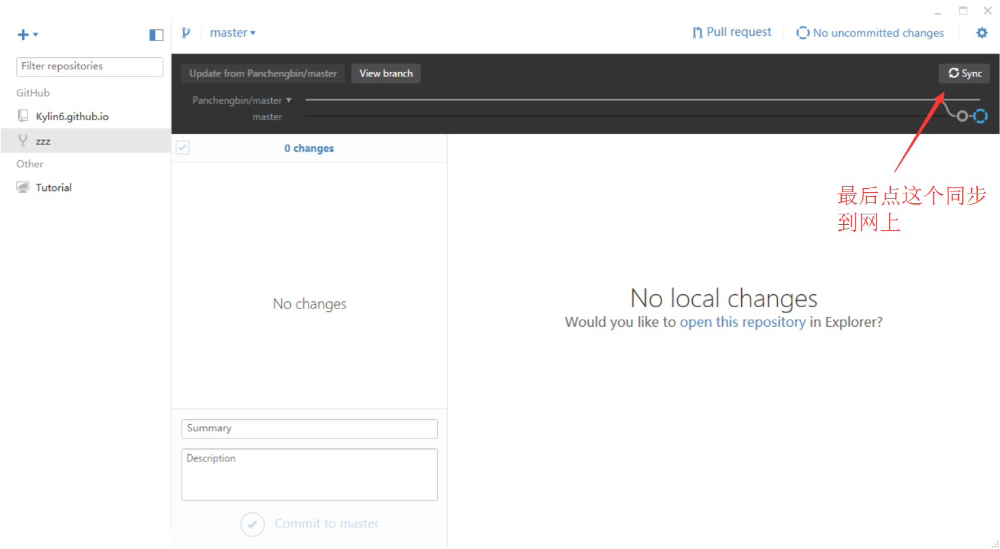

有一个仓库，叫Repo A。你如果要往里贡献代码，首先要Fork这个Repo，于是在你的Github账号下有了一个Repo A2,。然后你在这个A2下工作，Commit，push等。然后你希望原始仓库Repo A合并你的工作，你可以在Github上发起一个Pull Request，意思是请求Repo A的所有者从你的A2合并分支。如果被审核通过并正式合并，这样你就为项目A做贡献了
简单的说就是一个可以多人合作完成项目，对别人的项目给予建议或修改。
1. 先点击 fork 仓库，项目现在就在你的账号下了
在你自己的机器上 git clone 这个仓库，切换分支（也可以在 master 下），做一些修改。
有两种方法一种是使用命令另一种是使用Github客户端
~ git clone https://github.com/Kylin6/zzz.git
~ cd zzz
~ git checkout -b test-pr
~ git add . && git commit -m "test-pr"
~ git push origin test-pr
打开客户端，登陆，克隆再选择要克隆的项目
接下来就是对这个项目的修改,客户端会自动检测到你做的修改
这些都完成后就是Pull requests了

打开项目，Pull requests会提示
Pull requests的整个流程就这样结束了。